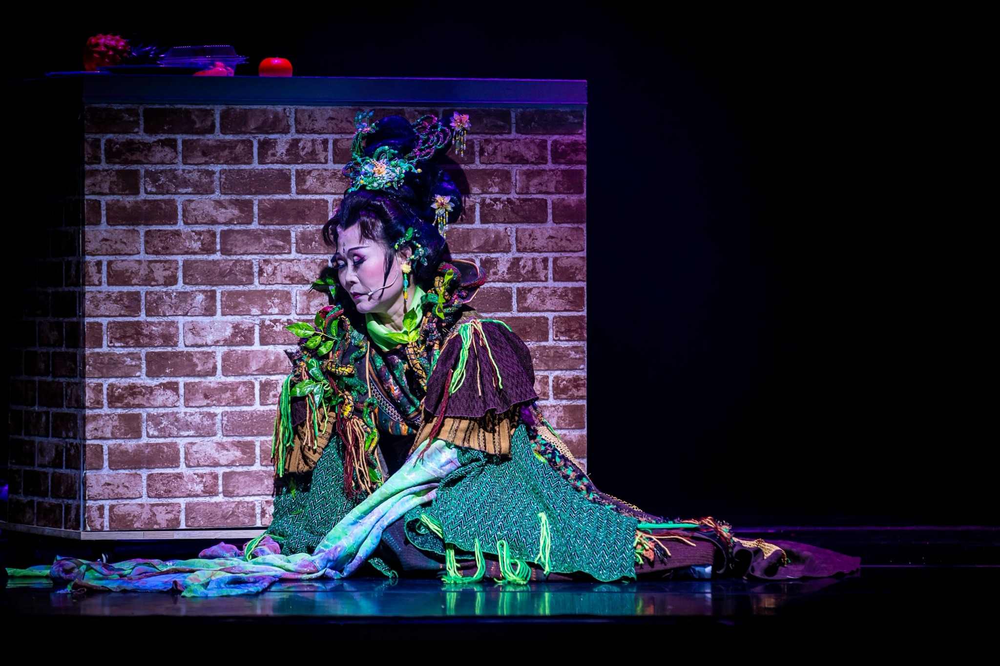
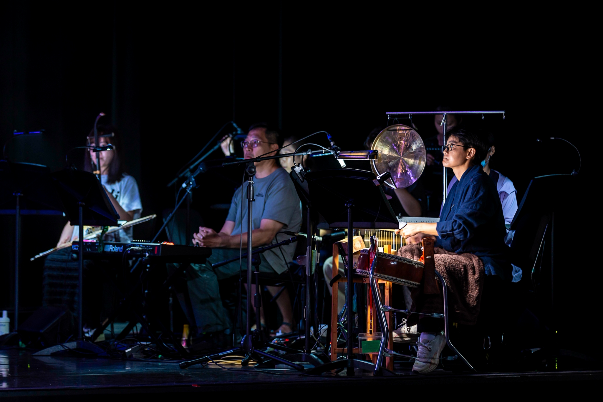
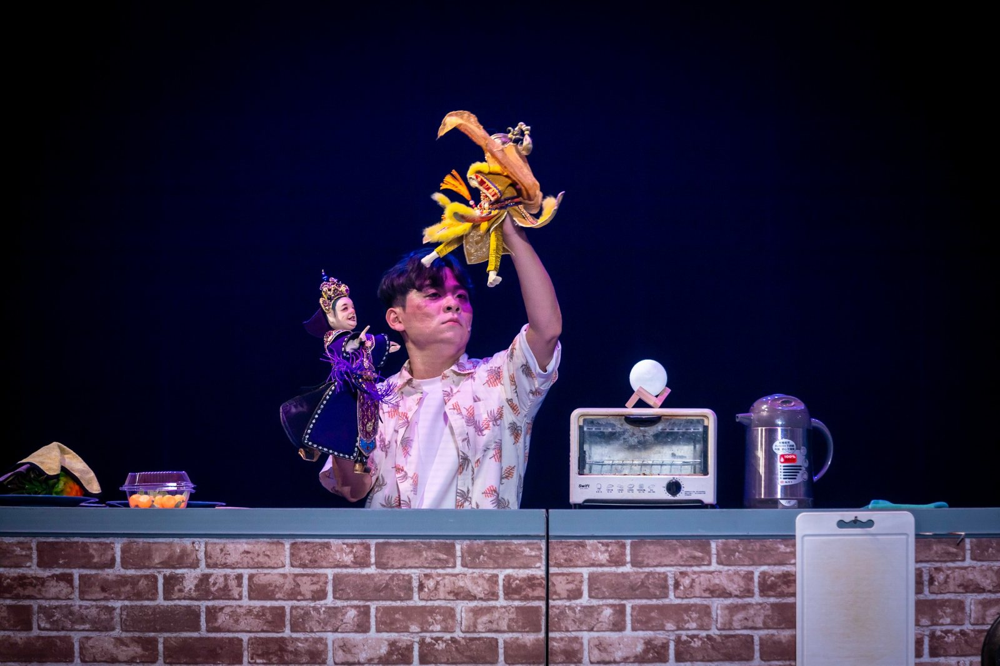
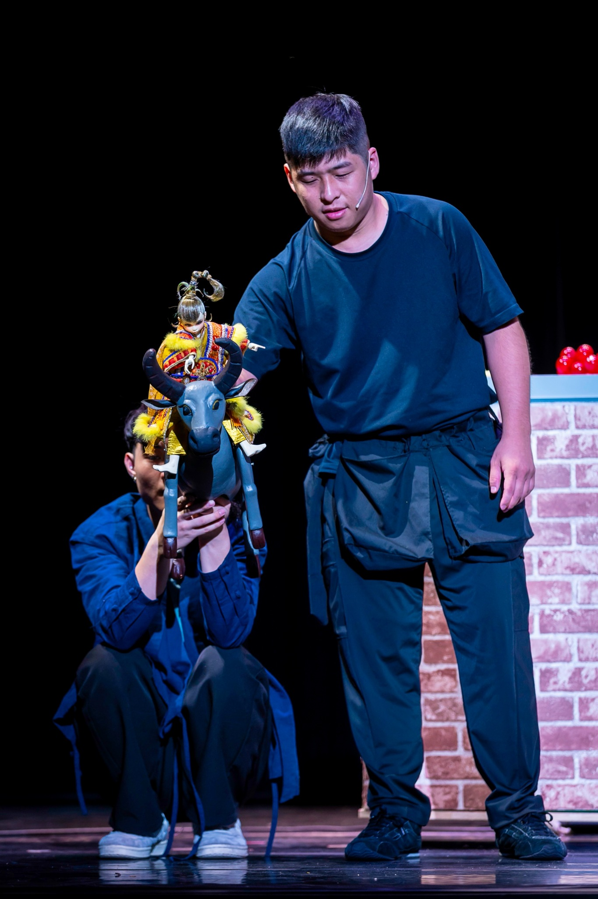
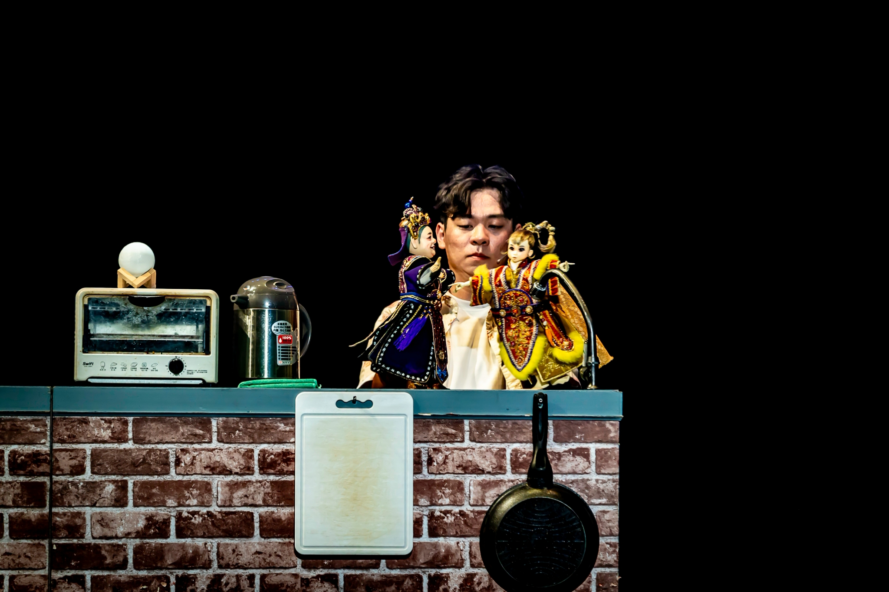
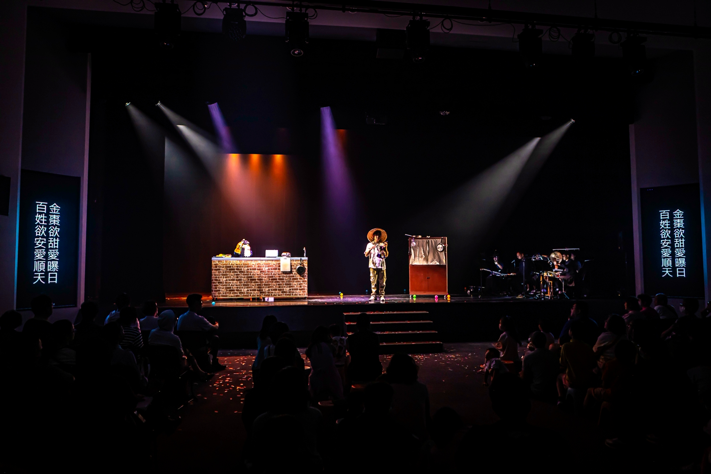
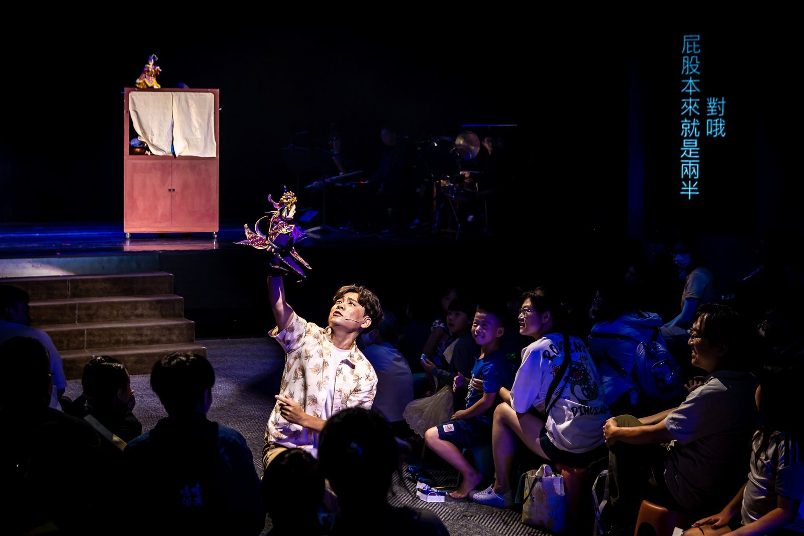
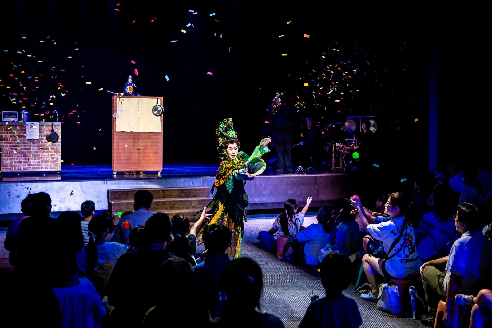

Children’s Puppet Theatre · 兒童布袋戲
《龜山夫人氣甲衝煙矣！》
Madam Guishan Is Furious!
About the work
作品介紹
《龜山夫人氣甲衝煙矣！》以宜蘭地景與地方傳說為創作靈感，融合布袋戲、歌仔調、真人表演與物件形式。甄武郎誤取龜卵引發衝突，龜山夫人與地理神祇介入調解，從一場誤會延伸到敬天順地、珍惜萬物的思考。
作品大膽挑戰真人與戲偶同台，並加入觀眾問答、任務式互動與五彩布等橋段。創作過程由游富凱從人與偶的比例及舞臺關係提供諮詢，陳佳豪則以布袋戲經驗陪伴團隊思考：當真人與戲偶同時出現時，如何仍讓「偶」成為觀眾目光的焦點。
Production stills
演出劇照
人偶共演、操偶技藝與觀眾互動現場。







